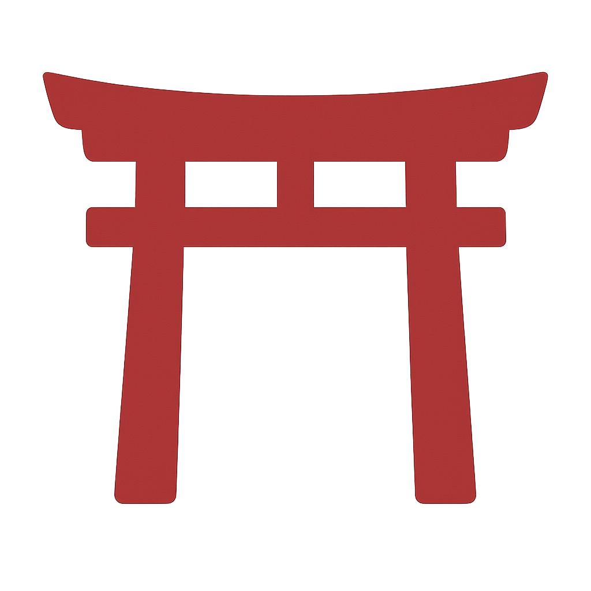

Hajimete – Debutto
Un primo sguardo sul Giappone, tra meraviglia e scoperta.
Pensato per chi desidera esplorare le meraviglie essenziali del Giappone, con equilibrio tra tradizione e modernità. Ideale per chi si avvicina per la prima volta al Paese del Sol Levante.
- Durata: da 8 a 18 notti
- Città visitabili: Tokyo, Kyoto, Osaka, Hakone, Nara, Hiroshima, Nikko, Kamakura, Yokohama, Kawaguchiko
- Ideale per: viaggiatori al primo viaggio in Giappone
A partire da 2.490€
Panoramica del viaggio
Come usare la mappa
- Clicca sui torii  per scoprire le tappe del viaggio
- Trascina per esplorare liberamente la mappa
- Usa lo zoom per avvicinarti alle zone locali
City Life
Shopping
Spiritualità
Gastronomia
Natura
Itinerario tipo – 12 notti
Mattina: Partenza con volo notturno per il Giappone.
Pomeriggio: Arrivo all’aeroporto di Tokyo. Trasferimento in hotel ad Asakusa.
Sera: Ambientamento e prima passeggiata nei dintorni.
Quartiere di Asakusa
Mattina: Visita al Senso-ji e alla via degli utensili Kappabashi.
Pomeriggio: Salita alla Tokyo Skytree e tempo libero.
Sera: Passeggiata a Shibuya e dintorni.
Senso-ji, Tokyo Skytree, Shibuya Crossing
Mattina: Visita al Meiji Jingu e shopping in Takeshita-dori.
Pomeriggio: Passeggiata nel parco di Ueno e mercato di Ameyoko.
Sera: Luci e grattacieli di Shinjuku.
Meiji Jingu, Takeshita-dori, Ueno Park, Shinjuku
Mattina: Escursione a Kamakura: Grande Buddha (Daibutsu), Tsurugaoka Hachimangu, centro storico.
Pomeriggio: Visita a Yokohama: Ramen Museum, ruota panoramica, Chinatown.
Sera: Rientro a Tokyo.
Daibutsu, Tsurugaoka Hachimangu, Yokohama Chinatown
Mattina: Partenza per Kawaguchiko, salita al Mt. Fuji Ropeway.
Pomeriggio: Visita al villaggio Iyashi no Sato.
Sera: Cena in ristorante tipico e passeggiata sul lago.
Mt. Fuji Ropeway, Iyashi no Sato
Mattina: Escursione alla Chureito Pagoda, visita a Oshino Hakkai.
Pomeriggio: Degustazione guidata alla Ide Sake Brewery, possibilità di onsen.
Sera: Izakaya o cena locale.
Chureito Pagoda, Oshino Hakkai, Ide Sake Brewery
Mattina: Trasferimento da Kawaguchiko, sosta a Shibuya.
Pomeriggio: Arrivo a Osaka, sistemazione in zona Namba.
Sera: Visita a Shinsekai e Torre Tsutenkaku.
Shinsekai, Torre Tsutenkaku
Mattina: Visita al Castello Nijo e Palazzo Imperiale.
Pomeriggio: Kiyomizu-dera e le vie storiche Sannenzaka e Ninenzaka.
Sera: Rientro a Osaka, cena lungo il Dotonbori.
Nijo-jo, Kiyomizu-dera, Dotonbori
Mattina: Kinkaku-ji e Ryoan-ji.
Pomeriggio: Arashiyama: Tenryu-ji e foresta di bambù.
Sera: Rientro a Osaka, cena a Umeda.
Kinkaku-ji, Tenryu-ji, Arashiyama
Mattina: Visita al tempio Byodo-in di Uji.
Pomeriggio: Escursione a Nara: parco dei cervi, templi storici.
Sera: Rientro a Osaka.
Byodo-in, Parco di Nara
Trasferimento all’aeroporto del Kansai e partenza per l’Italia.
Arrivo previsto in giornata. Fine dei servizi.
Itinerario tipo – su mappa
Come usare la mappa
- Clicca sui torii per scoprire le tappe del viaggio
- Trascina per esplorare liberamente la mappa
- Usa lo zoom per avvicinarti alle zone locali
I luoghi del viaggio Hajimete


- Alloggi centrali in categoria standard o superiore
- Voli andata/ritorno da principali aeroporti italiani
- Assicurazione medica, bagaglio e annullamento
- Guide digitali generali e tematiche in PDF
- Accesso gratuito al nostro travel assistant di viaggio
- Pasti e bevande
- Attività, ingressi o escursioni non specificati
- Servizi non espressamente indicati come inclusi
- Esperienza in ryokan tradizionale con cena kaiseki
- Onsen privati o naturali
- Guide locali per Tokyo o Kyoto
- Biglietti Ghibli Park o Shinkansen extra
I prezzi indicati si riferiscono al soggiorno minimo in bassa stagione.
Consigliamo di prenotare almeno 3–4 mesi prima per assicurarsi disponibilità, offerte e personalizzazione.